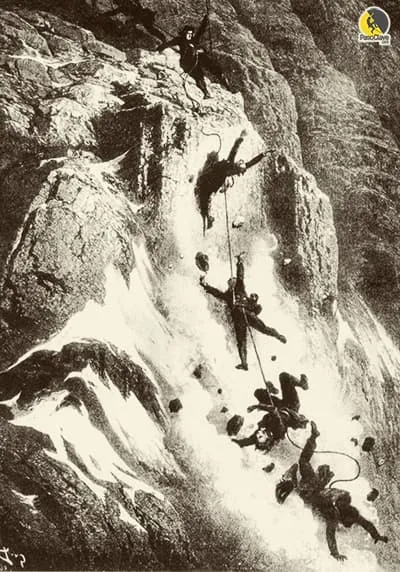

El 8 de agosto de 1786 se registra primer ascenso al Mont Blanc,
por el Dr. Michel G. Paccard y su guía Jacques Balmat.
Breve historia de la escalada
Historia
A finales del siglo XIX, Mummery y Burgener abrieron las primeras rutas de IV grado en Chamonix, aunque la comunidad montañera las veía con recelo.
Paul Preuss destacó como innovador, escalando tramos de V sin apenas usar medios artificiales, defendiendo la pureza de la escalada.
Elbsandstein se consolidó como cuna de la escalada libre, con Oskar Schuster estableciendo normas que prohibían ayudas artificiales.
En 1912, Rudolf Hermann publicó la primera guía de Elbsandstein con reglas estrictas: sin magnesio ni fisureros, solo nudos, pocos seguros y siempre desde abajo.
La escalada se convirtió en una actividad exigente y peligrosa, con riesgo real de caídas mortales. Hans Dülfer creó la primera graduación de dificultad en roca,
perfeccionada por Welzenbach, origen de la actual escala UIAA.
Características de un buen escalador
Fuerza, técnica y mente
Para ello, los escaladores, utilizando medios naturales y/o artificiales, aprovechando las oportunidades,
a veces escasas, que ofrece la montaña, algunos escaladores lo consideran como una verdadera danza vertical.
Las características de un buen escalador son la destreza, la fuerza física y la fuerza mental,
la vertical no es un terreno para todos los públicos se convierte en una lucha entre uno mismo y la montaña.
La gestión del miedo y del riesgo es clave: se entrena la mente igual que los músculos para
tomar decisiones seguras en cada movimiento.
Resistencia y planificación
La resistencia es un pilar fundamental en el entrenamiento de escaladores,
ya que permite mantener el rendimiento durante sesiones prolongadas y mejorar la capacidad de
encadenar vías complejas con tiempos de recuperación más cortos. Un buen escalador
sabe cuándo descansar y cómo distribuir el esfuerzo.
Una planificación adecuada del entrenamiento debe integrar sesiones específicas de resistencia, considerando
factores como la intensidad, el volumen de movimientos, los tiempos de contacto y la especialización del trabajo
muscular local, especialmente en el antebrazo.
También es muy importante antes de salir, planifica la vía, revisa el parte meteorológico y comprueba todo el material
para minimizar imprevistos.